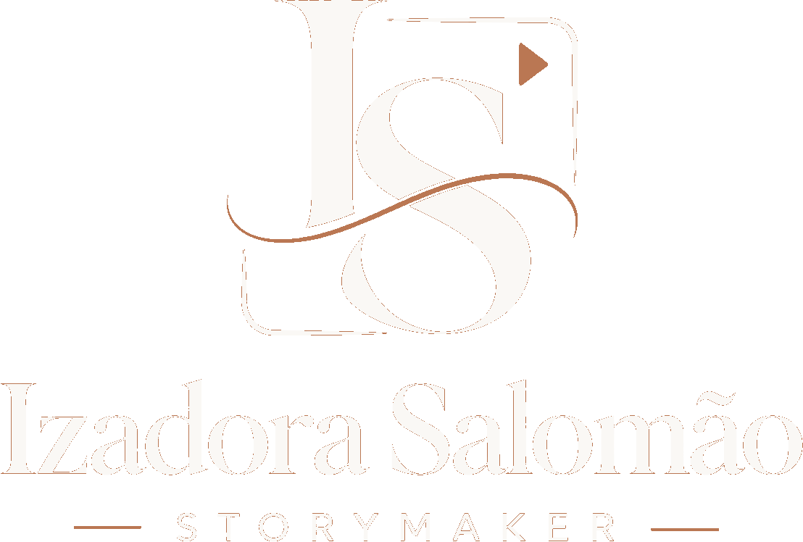

Catálogo de produtos
Sua marca contada em conteúdo que as pessoas param pra ver
Stories, reels e fotos captados no seu negócio ou evento, editados e prontos para postar.
Prazer, Izadora
Eu transformo o dia a dia do seu negócio em conteúdo
Sou storymaker na Região dos Lagos. Vou até você, de celular e câmera na mão, e capto o que faz a sua marca ser única: o sorriso da equipe, o prato saindo da cozinha, o pôr do sol da pousada, o brinde no seu evento.
Meu conteúdo é leve, verdadeiro e bonito. Ele conversa com quem assiste e faz a pessoa querer estar ali.
Como funciona
1Conversa: você me conta sobre sua marca e o que quer mostrar.
2Planejamento: definimos o pacote, as datas e as cenas essenciais.
3Captação: vou até você e gravo tudo no formato vertical.
4Entrega: material editado e organizado, pronto para postar.
Incluso em todos os produtos
- Captação presencial no seu espaço
- Edição com cortes, texto e trilha
- Formato vertical nativo (9:16)
- Entrega organizada em pasta online
- Parte do conteúdo entregue no mesmo dia
- Atendimento direto pelo WhatsApp
Cidades atendidas
Cabo Frio · Búzios · Arraial do Cabo · São Pedro da Aldeia · Casimiro de Abreu · Araruama · Saquarema · Rio das Ostras. Outras cidades sob consulta.
Cobertura de eventos
Seu evento nas redes enquanto acontece
Casamentos, aniversários, 15 anos, inaugurações, festas e eventos corporativos registrados em tempo real, com um diferencial exclusivo.
Exclusivo
Álbum ao Vivo
Os convidados escaneiam um QR code e veem as fotos do evento chegando durante a festa, já editadas. Dá para baixar e compartilhar nos stories na hora. Sem esperar semanas.
Sem aplicativoÁlbum privadoFotos editadas em minutosModo telão
| Nível | O que inclui | Indicado para |
|---|
| Essencial | Stories postados durante o evento, reels de melhores momentos e fotos entregues depois | Aniversários e eventos menores |
| Ao Vivo recomendado | Tudo do Essencial + Álbum ao Vivo com editor dedicado e QR codes para as mesas | Casamentos, 15 anos e eventos corporativos |
| Premium | Tudo do Ao Vivo + modo telão + segundo fotógrafo + entrega final expressa | Grandes eventos e marcas |
Investimentosob consulta, conforme duração e local
Vamos conversar?
Bora colocar sua marca nos stories?
Me chama no WhatsApp com o seu negócio, a cidade e o que você procura. O orçamento é sem compromisso.